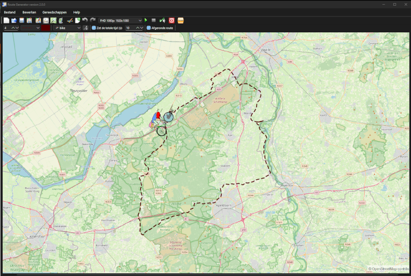

Welkom bij de Route Generator pagina
Route Generator is een gratis tool om geanimeerde reistroutes op een kaart te maken en als video te exporteren. Je kunt kaarten van OpenStreetMap of Google Maps gebruiken als achtergrond, en vervolgens je eigen routes tekenen via "point-and-click" of GPS-tracks importeren uit GPX-bestanden. De gegenereerde routeanimatie kan daarna worden toegevoegd aan videoprojecten in videobewerkingsprogramma's zoals Pinnacle Studio of Vegas, zodat reisroutes makkelijk ingevoegd kunnen worden in eigen films.
Route Generator 2.0.0 uitgebracht! (Zie Nieuws voor meer details)
En een nieuwe tutorial over meerdere routes en een scrollende kaart
Awards
5 stars - reviewed by Best Freeware Download
100% FREE award granted by Softpedia
Hieronder is voorbeeldfilmpje te zien, gemaakt met Route Generator en een screenshot van het programma.
|  | |
| Route Generator 2.0.0 overzicht | Screenshot van Route Generator |